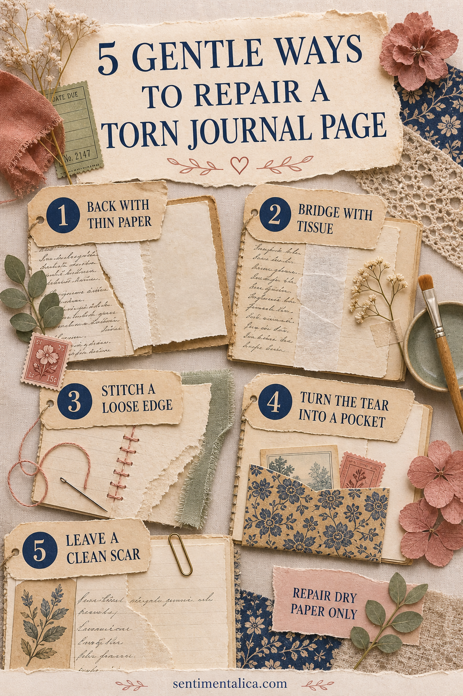

A torn journal page does not always need to be hidden. The kindest repair supports the paper, keeps the book flexible, and lets a little history remain visible.

First, let the page dry
If the tear happened near wet glue, paint, tea dye, or a pressed plant, stop. Separate the spread with clean release paper and wait until everything is fully dry. Wet fibers stretch easily and a rushed repair can make the tear longer.
Back it with thin paper
For a clean tear, align the edges without overlapping them. Attach a narrow strip of strong thin paper to the back with a minimal amount of suitable adhesive. Press through clean paper and let it dry flat.
Bridge it with tissue
Lightweight repair tissue works well when brittle edges need broad support. Feather or tear the tissue edge so it disappears gently into the page. Test first because some glues darken translucent material.
Stitch a loose edge
If the journal is handmade and the paper is sturdy, a few widely spaced stitches can secure a decorative outer tear. Pierce holes before sewing and keep them away from the fragile split. Do not pull the thread tight enough to buckle the page.
Turn the tear into a pocket
A damaged lower corner can become the opening of a small pocket. Back the weak area first, then add a separate paper layer around it. Make sure the new pocket does not place weight directly on the torn fibers.
Leave a clean scar
Sometimes the tear is stable and tells the truth about a well-used journal. Trim only loose fibers that catch, reinforce the back if needed, and leave the line visible. A repair can be honest without looking neglected.
Know when to stop
If the page contains an original letter, valuable photograph, mold, active staining, or paper that crumbles when touched, do not experiment. Make a copy for the journal and store the original safely. A conservator is the right person for material with historical or financial value.
Prevent the next tear
Keep heavy pockets away from thin pages, avoid thick clusters near the spine, and support large flip-outs with flexible hinges. When turning delicate pages, lift from the outer edge rather than pulling a small tab.
Make a repair kit
Keep thin neutral paper, release paper, a small soft brush, suitable paper adhesive, cotton thread, a blunt needle, and two clean weights together. Avoid ordinary pressure-sensitive tape for long-term repairs; it can yellow, harden, and leave residue that becomes more difficult to remove.
Test every material first
Apply the proposed repair to a scrap with similar thickness and coating. Let it dry for a full day, then bend it gently. Check for darkening, stiffness, bleeding ink, or a glossy patch. A repair that looks invisible while wet may become obvious after drying.
Work from the back whenever possible and use less adhesive than you think you need. You can add support later, but removing a heavy repair may cause new damage.
The best repair is quiet: the page opens, the memory remains readable, and the journal can continue being used.
Image note: Some visuals in this article were created with AI and curated by Sentimentalica.